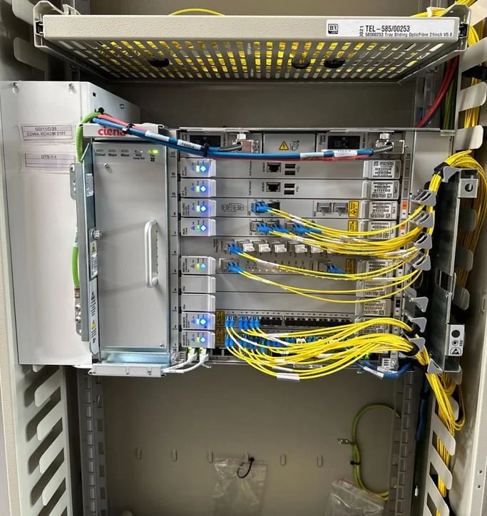

Service & Support
Operation & Maintenance Capabilities
Proactive maintenance and rapid-response support programs designed to ensure peak network performance and uptime.

Maintenance Protocols
- Preventive Maintenance: Scheduled inspections and servicing to prevent outages.
- Corrective Maintenance: Rapid diagnosis and resolution of network issues.
Operational Support
- SLA Management: Tailored service level agreements to meet your business requirements.
- 24/7 Support: On-call programs ensuring round-the-clock availability for critical systems.